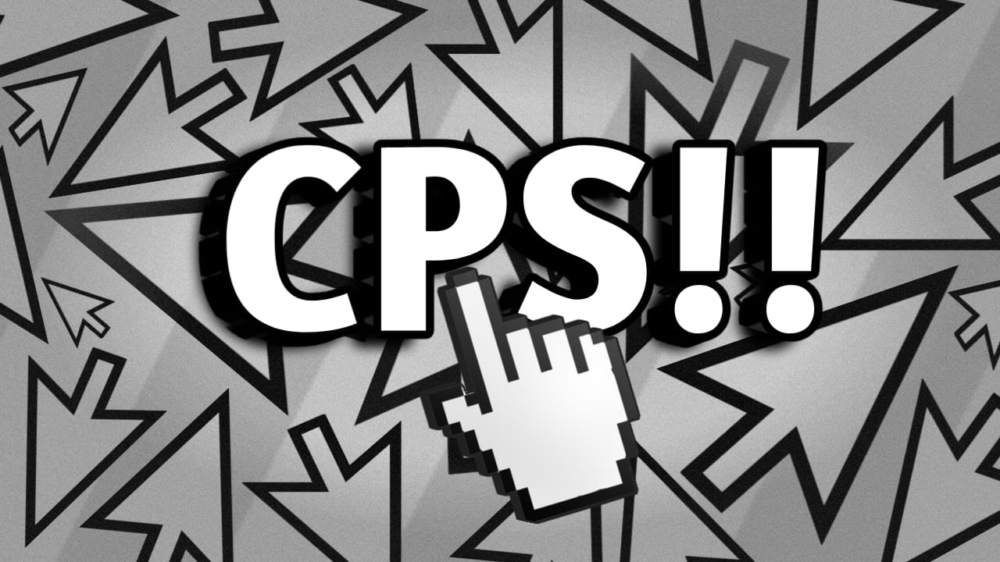
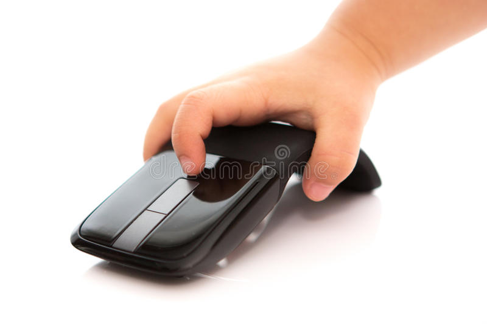

Hola! Played some minecraft, wanna know about CPS, right spot then!
CPS stands for Clicks per Second. It basically means how many times can you click in a second or just how fast you click. You can do a 5, 10, 20, 60 test for cps and it's average is your cps. You might have heard that CPS doesn't matter, but well looking at the internet, it surely does.
Check your CPS!
There are multiple ways of checking your CPS online just type "CPS counter" on the internet and you will find tons of CPS counter.
Here are some the best CPS counters.
~ arealme.com ➜ Click Here~ cpstest.org ➜ Click Here
~ cpscounter.org ➜ Click Here
~ rapidtables.com ➜ Click Here
~ eggradients.com ➜ Click Here
~ clickspeedtest.com ➜ Click Here
Done with the counter lets get straight to types of clicks.
1) Jitter Clicking
Jitterclicking is a method coined by the Minecraft 'PvP' community. It is about jittering your hand on the mouse as fast as you can. To do jitter clicking follow the tips below:
~ Keep your arm steady, do not grab your mouse too hard.
~ Place your finger to the mouse button and shake the muscles of your wrist.
~ To make it simple you can push your mouse around while clicking.
Harms of jitter clicking!
Jitter clicking is bad for health. It can cause Arthritis or Carpal tunnel these are the issues that happened due to frictioning your joints above the limits and Jitter clicking is almost the same.
Jitter clicking is safe if you're clicking a range between 9 to 15cps. Try not to cross the limit over 15-30 seconds. It can hurt your arm, hand, wrist, and fingers for a long time. It can also seriously damage your hand if you cross your clicking limits.
~credits-cpstest.org
2) Butterfly Click
Butterfly clicking is clicking your mouse as fast as you can with two fingers, usually your index finger and your middle finger, and therefore gives you a higher clicks per second if done properly.
Is Butterfly click bad?
YES! Butterfly clicking can be worse because the lifted repetition of the fingers which comes from the tendons and muscles in your wrists. It can damage your wrist, long term able to put you in the hospital.
Get banned with Butterfly click!
Every pot pvp bans butterfly clicking because it's hard to tell the difference between butterfly clicking and a macro/autoclicker. And its so much more unnecessary work for staff to click test every user. If you just started butterfly click, either stop is or dont even try to make it better because once your cps starts increasing your muscles take more stress and Hypixel might aslo ban you.
It's even bad for the precious mouse you brought.
3) Drag Click
What is drag clicking? Well, it's exactly what it sounds like — forcefully dragging your finger across a mouse button (left or right) to “trick” it into recording more clicks.
Mouse life matters
drag and double clicking is damaging for the mouse, especially for the switches, and will shorten the lifespan of the mouse.Will I get banned!
Drag clicking is allowed, don't worry. You won't get banned for drag clicking. What's bannable is when you start using software to give you more cps. Since when you drag click it's actually you doing the clicking, it's fine
Your Ranking
Here's what you might stand among rest in a CPS test. Do a CPS test and check how much good you are.